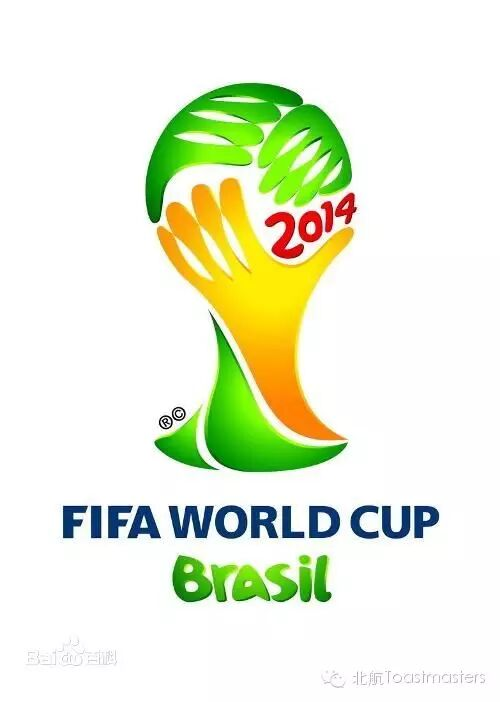
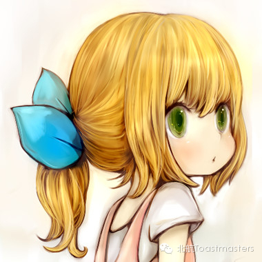
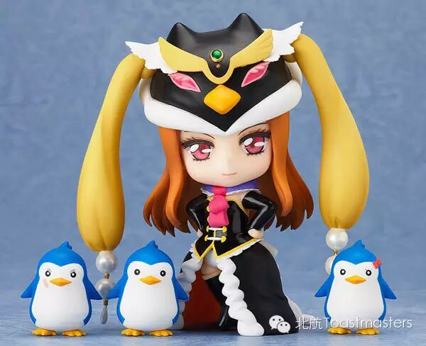
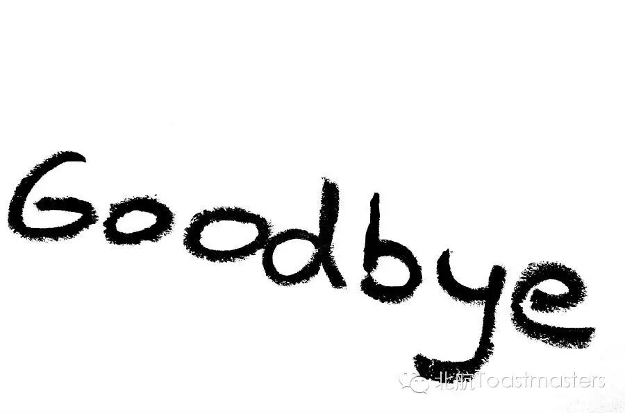

Beihang Toastmasters Club 63rd Meeting
Time: Friday Jun. 13 19:30-21:30
Venue: Room A212, New Main Building, Beihang University

Toastmaster: Deron
General evaluator: Jocelyn
June is a month of sports. During this month, you can enjoy the NBA final of Miami Heat vs San Antonio Spurs, as well as the FIFA World Cup in Brasil. Whether you love it or not, you can never deny their strong desire to win the champion of the world. Sport is such an amazing thing that help children learn to live from the very beginning. It is also the thing that keep people's spirit of compete. What do you think?
Table Topics
Table Topic Master: Dale
Table Topic Evaluator: Keven
Talented Dale prepared several interesting and thoughtful questions on sports including some double questions. No idea what it might be? Friday night, show you the answer!

CC1 Elena
Elena has participated in our meeting many times, as guests and function roles. This time she is going to give her first show. How will she break the ice? Answer lies in Friday's meeting!
Prepared Speech 
2nd speaker
CC4 Veronica
Iron lady Veronica is coming! If you haven't experienced her governing power, you should not miss this chance! This is a lady with wisdom and confidence. You will never regret for paying time for her show
Prepared Speech 
3rd speaker
Say Goodbye
Nikita comes from Beihua Toastmaster Club. We are very honored to have her here to finish her CC 10. What will the endearing girl bring us? No one knows. Let's waiting for her amazing performance!
====分=====割=====线====
老朋友：点击右上角按钮分享到朋友圈
新朋友：点击标题下方的【北航Toastmasters】关注我们查看历史消息
北航Toastmasters专注于提升演讲能力和领导能力。这是一个增强自信、促进个人成长的舞台。
每周五19:30在北航新主楼A212举办meeting.
我们欢迎每一个感兴趣的朋友前来做客!
路线：回复r即可查看路线地图